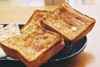

French Toast

A tasty breakfast treat
There are many, fancy variations on this basic recipe.
is easy recipe works with many types of bread:
white, whole wheat, brioche, cinnamon-raisin, Italian, or French.
Serve hot with butter or margarine and maple syrup.
Ingredients
- 2/3 cup milk
- 2 large eggs
- 1 teaspoon of vanilla extract
- 1/4 teaspoon ground cinnamon
- salt to taste
- 6 thick slices bread
- 1 tablespoon unsalted butter, or more as needed
Directions
- Whisk milk, eggs, vanilla, cinnamon, and salt together in a shallow bowl.
- Lightly butter a griddle and heat over medium-high heat.
- Dunk bread in the egg mixture, soaking both sides. Transfer to the hot skillet and cook until golden, 3 to 4 minutes per side. Serve hot.